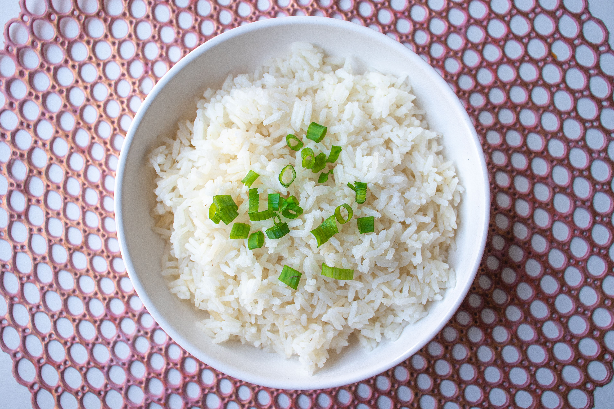

Arroz branco soltinho
Preparo: 25 minutos. Rende 4 porções.
Ingredientes
- 1 xícara (chá) de arroz agulhinha
- 2 xícaras (chá) de água fervente
- 1 colher (sopa) de óleo
- 1 dente de alho amassado
- 1 colher (chá) de sal
Modo de preparo
- Lave o arroz em água corrente até a água sair menos turva.
- Aqueça o óleo na panela e doure o alho por cerca de 30 segundos, sem deixar queimar.
- Junte o arroz e mexa por 1 minuto, para os grãos ficarem envolvidos no óleo.
- Acrescente a água fervente e o sal. Cozinhe em fogo médio até a água baixar e os grãos aparecerem.
- Abaixe o fogo, tampe a panela e cozinhe por 10 a 12 minutos.
- Desligue, deixe descansar tampado por 5 minutos e solte os grãos com um garfo.